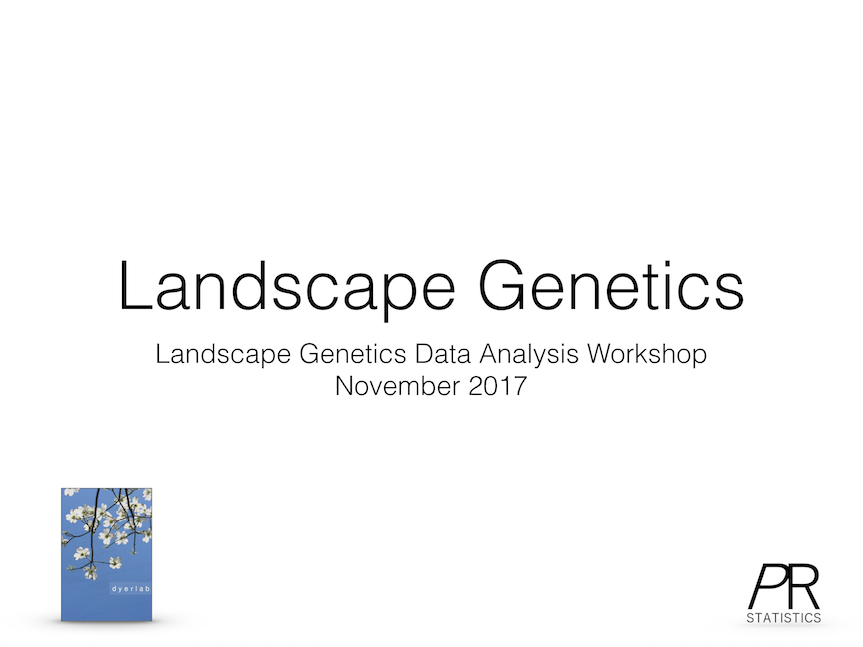

2 Introduction

<p>This lecture focus on providing a background in what landscape genetics is at this time. In doing so, we set the stage for the content to be covered in this workshop.</p>
<p><a href="Lectures/LG1_1_Introduction/index.html" target="new">Here</a> are the slides.</p>